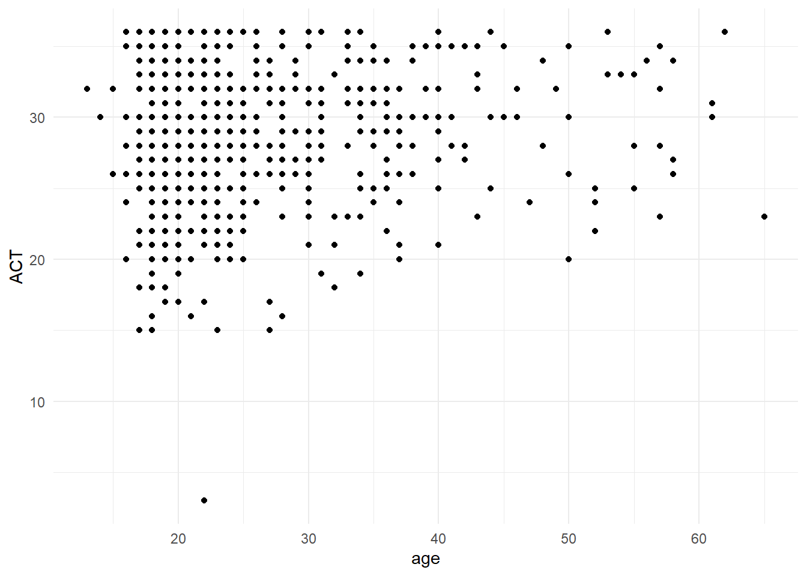
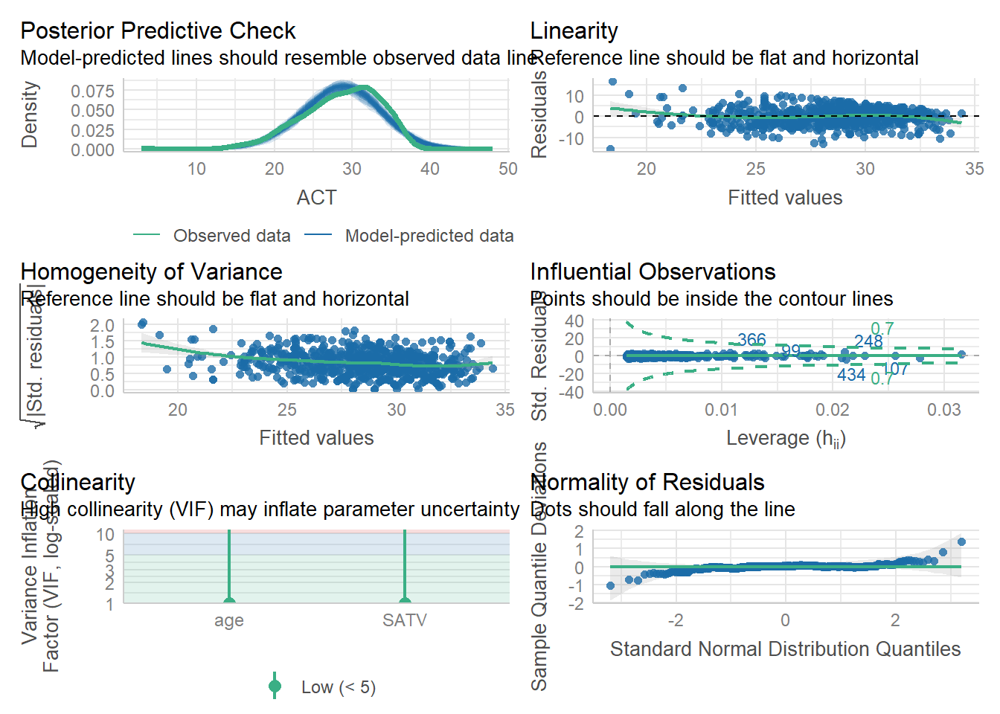
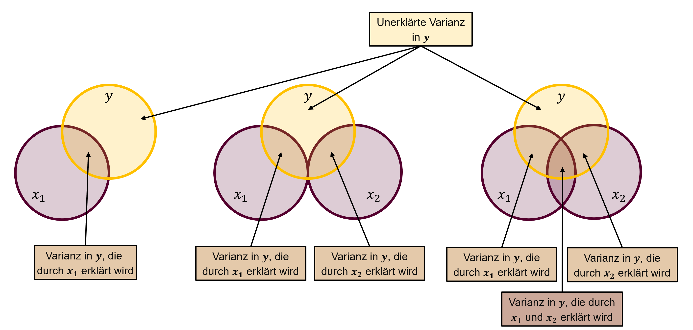
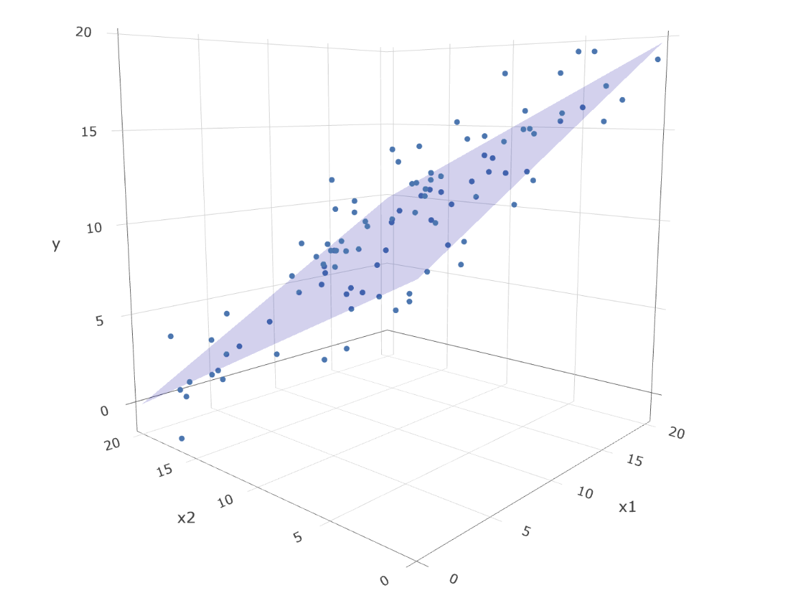

library(tidyverse)
d_sat_act <- read.csv("data/sat_act.csv") |>
mutate(gender = as.factor(gender)) |>
filter(SATQ != "NA")Übung 12
Aufgabe 12.0: Projektumgebung erstellen
[2-5 min]
Dateien und Packages für die Übung vorbereiten:
- Laden Sie den Datensatz
sat_act.csvherunter und speichern Sie den Datensatz imdata-Ordner des RProjektsregression.
Falls Übung 11 nicht durchgeführt
- Laden Sie den Projektordner
regressionherunter und entzippen Sie den Ordner.1 Der Projektordner enthält:- RProjekt
regression.RProj - Datensatz
stressanxiety.csvfür Übung 11 - Datensatz
sat_act.csvfür Übung 12
- RProjekt
- Installieren Sie (falls noch nicht vorhanden) die benötigten Packages unter
Tools>Install Packages...oder in der Konsole mitinstall.packages("performance")2
Öffnen Sie das RProjekt
regression.Erstellen Sie ein RNotebook namens
uebung-12.
Aufgabe 12.1: Positive und negative Regressionsgewichte
5 -10 min
Was bedeuten folgende (fiktive) Resultate?
A. Eine Studie hat den Einfluss von Musikstunden pro Woche auf das Abschneiden in einem Intelligenztest bei 15-jährigen untersucht. Die Studie hat ein \(b_0\) = 98.72 und ein \(b_1\) = 0.25 gefunden.
B. Eine Studie hat den Zusammenhang von Musikstunden pro Woche und dem dem Abschneiden in einem Sportleistungstest bei 15-jährigen untersucht. Die Studie hat ein \(b_0\) = 34.3 und ein \(b_1\) = -1.21 gefunden.
C. Eine Studie hat untersucht, wie sich die Lebenszufriedenheit verändert wenn Personen mehr oder weniger Unterstützung durch die Spitex erhalten. Die Studie hat ein \(b_0\) = 5.7 und ein \(b_1\) = -0.002 gefunden.
Wie würden Sie das Resultat einer Person erklären, die die Regressionsanalyse nicht kennt? Formulieren Sie in einem Satz aus, was die Ergebnisse bedeuten.
Evtl. helfen folgende Unterfragen dabei:
- Was ist die AV, was ist die UV?
A. Intelligenztest. B. Sportleistungstest. C. Lebenszufriedenheit.
Wie verändert sich die AV in Abhängigkeit von der UV?
In welchen Beispielen finden Sie standardisierte und in welchen unstandardisierte Variablen sinnvoller?
IQ z.B. ist ein “standardisiertes Mass” und ist so informativer als z-transformiert (bei der z-Transformation geht Information verloren, unterschiedliche Varianzen zwischen Gruppen z.B. werden vereinheitlicht.
Sollen Gruppen verglichen werden, die mit demselben Instrument gemessen werden? Oder sollen Konzepte zwischen verschiedenen Messinstrumenten verglichen werden?
Aufgabe 12.2: Einstieg in multiple Regression
[5 min]
a. Was unterscheidet die einfach von der multiplen Regression? Was ist der Mehrwert?
Mehrere Prädiktorvariablen: komplexere Analysen möglich (Verhalten wird durch viele Faktoren beeinflusst), Störvariablen können einbezogen werden, korrelierte Prädiktoren können einbezogen werden, …
b. Was sind die Voraussetzungen für die multiple Regression?
In unserem Fall: Metrische Variablen, Linearität, Homoskedastizität, Normalverteilte Fehler, Unabhängige Fehler
c. Welche Fragestellung würden Sie untersuchen wollen, bei der eine multiple Regression zur Anwendung kommen könnte?
d. Suchen Sie mit dem Suchbegriff “we used a multiple regression” oder “a multiple linear regression model was used” sowie einem Begriff für ein Thema in der Psychologie, dass Sie interessiert in einer Datenbank nach Artikeln.
Schauen Sie sich dann an, was diese Studien untersucht haben und lesen Sie die Results-Section. Finden Sie die Kennwerte der Regressionsanalyse? Was verstehen Sie bezüglich der Analyse, welche gemacht wurde und welche Resultate sie lieferten? Was bleibt unklar?
Diskutieren Sie kurz miteinander, was Sie gefunden haben.
Aufgabe 12.3: Regressionsgleichung der multiplen Regression
[max 15 min]
a. Wie lautet die Bestimmungsgleichung der Regressionsgeraden in der multiplen Regressionsanalyse? Schreiben Sie die Gleichung für zwei Prädiktorvariablen auf.
für Variablen: \(\hat{y} = b_0 + b_1 \cdot x_1 + b_2 \cdot x_2 + e\)
für Merkmalsträger (Untersuchungseinheiten): \(\hat{y}_m = b_0 + b_1 \cdot x_{m1} + b_2 \cdot x_{m2} + e_m\)
für vorhergesagte Werte: \(\hat{y}_m = b_0 + b_1 \cdot x_{m1} + b_2 \cdot x_{m2}\)
\(y\): AV, \(\hat{y}_m\): vorhergesagter Wert der AV bei gegebenen Werten für \(x_{m1}\) und \(x_{m2}\)
\(x_1\): UV/Prädiktorvariable 1, \(x_2\): UV/Prädiktorvariable 2
\(b_0\): Achsenabschnitt (intercept)
\(b_1\): Regressionsgewicht, Regressionskoeffizient, Steigung (slope) für UV/Prädiktorvariable 1
\(b_2\): Regressionsgewicht, Regressionskoeffizient, Steigung (slope) für UV/Prädiktorvariable 2
\(e\): Residualvariable/Regressionsresiduum/Fehlerterm
b. Was bedeutet der Wert \(b_1\) in der multiplen Regression?
Der Regressionskoeffizient eines Prädiktors gibt an, um wie viel sich die erwarteten \(\hat{y}\)-Werte ändern, wenn man die Prädiktorvariable um eine Masseinheit erhöht und die Werte auf allen anderen Prädiktoren konstant hält.
c. Ergänzen Sie den folgenden Text zur Additivität der Regressionskomponenten:
Ein beobachteter -Wert lässt sich additiv zerlegen in \(b_0\), den mit \(b_1\) Wert von \(x_{m1}\) (), den mit \(b_2\) Wert von \(x_{m2}\) (), und den \(e_m\).
Fassen Sie in einfachen Worten zusammen, was Additivität der Regressionskomponenten bedeutet und tauschen Sie Ihre Definitionen aus.
Aufgabe 12.4: Multiple Regression berechnen I
30-45 min
Bearbeiten Sie diese Aufgabe im RNotebook uebung-12.
In dieser Aufgabe berechnen wir die Regression für das Datenbeispiel sat_act.csv.
Prüfungsscores
Beschreibung der Daten
Diese Daten wurden im Rahmen des SAPA-Projekts3 erhoben, um Online-Messungen von Testleistungen zu entwickeln (Revelle, Wilt und Rosenthal, 2009).
Der Datensatz (n = 700) beinhaltet die Variablen:
age: Alter in Jahrengender4: m (1), f (2)education: Selbstberichteter Bildungsgrad (1 = high school … 5 = graduate work)ACT: Testscore ACT (American College Testing)SATV: Testscore SAT (Scholastic Assessment Test) VerbalSATQ: Testscore SAT (Scholastic Assessment Test) Quantitativ
Quelle: Revelle, William, Wilt, Joshua, und Rosenthal, Allen (2009) Personality and Cognition: The Personality-Cognition Link. In Gruszka, Alexandra, Matthews, Gerald und Szymura, Blazej (Hrsg.) Handbook of Individual Differences in Cognition: Attention, Memory and Executive Control, Springer.5
a. Fragestellung
Welche Fragestellung möchten Sie bearbeiten mit den oben gegebenen Variablen? Überprüfen Sie die Voraussetzungen für die Regression (metrische Variablen und Linearität).
- Wählen Sie dafür drei Variablen aus (eine AV und zwei UVn).
- Formulieren Sie die Fragestellung und schreiben Sie sie in Ihr RNotebook.
- Schreiben Sie sich auf: Welche Variable ist \(y\)? Welche \(x_1\) und welche \(x_2\)?
- Denken Sie, dass \(x_1\) und \(x_2\) zusammenhängen?
Achtung education ist ordinalskaliert. gender ist kategorial.
b. “Präregistrierung”
Verfassen Sie ein Resultatetext ohne zu wissen welche Resultate die Analyse ergeben wird. Lassen Sie die Werte deshalb noch weg. Schreiben Sie einen Text für das für Sie wahrscheinlichste Ergebnis.
A multiple regression analysis was used to investigate if age and SATV are related to the ACT test score. The results of the regression indicated that the two predictors explained ____% of the variance (\(R^2\) = ._, \(F\)(_,____) = _____, p < . ____). It was found that age significantly predicted the score in the ACT (\(\beta\) = ____, \(p\) < . ____), as did SATV (\(\beta\) = ____, \(p\) < .____).
c. Datensatz vorbereiten
- Lesen Sie den Datensatz
sat_act.csvaus demdata-Ordner Ihresregression-Projekts ein und speichern Sie ihn unterd_sat_act. - Transformieren Sie die Variable
genderin eine kategoriale Variable. - In den SATQ-Scores gibt es einige fehlende Werte (missings). Filtern Sie diese heraus wie hier beschrieben.
Führen Sie diese Schritte idealerweise mit der Pipe (|>) aus, damit sie die Objekte nicht überschreiben/neu benennen müssen. Bei korrekter Ausführung bleiben 687 Datenpunkte (obs.) in 6 Variablen..
d. Variablen bestimmen und Voraussetzungen prüfen
- Schauen Sie für beide Variablenpaare \(y ~ x_1\) und \(y ~x_2\) den Zusammenhang mit einem Plot an. Ist die Annahme der (Quasi-)Linearität ok?
d_sat_act |> ggplot(aes(x = age, y = ACT)) +
geom_point() +
theme_minimal()
e. Regressionsmodelle berechnen und vergleichen
- Berechnen Sie das einfache lineare Regressionsmodell mit \(x_1\) als Prädiktorvariable.
# Modell mit x1 als Prädiktor
m_x1 <- ___# Modell mit x1 als Prädiktor
m_x1 <- lm(ACT ~ age, data = d_sat_act)
summary(m_x1)
Call:
lm(formula = ACT ~ age, data = d_sat_act)
Residuals:
Min 1Q Median 3Q Max
-25.3424 -3.1987 0.4312 3.6576 8.0001
Coefficients:
Estimate Std. Error t value Pr(>|t|)
(Intercept) 27.08650 0.52837 51.264 < 2e-16 ***
age 0.05709 0.01933 2.954 0.00325 **
---
Signif. codes: 0 '***' 0.001 '**' 0.01 '*' 0.05 '.' 0.1 ' ' 1
Residual standard error: 4.804 on 685 degrees of freedom
Multiple R-squared: 0.01258, Adjusted R-squared: 0.01113
F-statistic: 8.724 on 1 and 685 DF, p-value: 0.003248- Berechnen Sie das einfache lineare Regressionsmodell mit \(x_2\) als Prädiktorvariable.
# Modell mit x2 als Prädiktor
m_x2 <- ___# Modell mit x2 als Prädiktor
m_x2 <- lm(ACT ~ SATV, data = d_sat_act)
summary(m_x2)
Call:
lm(formula = ACT ~ SATV, data = d_sat_act)
Residuals:
Min 1Q Median 3Q Max
-15.6957 -2.5013 0.1157 2.5496 16.3043
Coefficients:
Estimate Std. Error t value Pr(>|t|)
(Intercept) 13.915841 0.840203 16.56 <2e-16 ***
SATV 0.023899 0.001349 17.71 <2e-16 ***
---
Signif. codes: 0 '***' 0.001 '**' 0.01 '*' 0.05 '.' 0.1 ' ' 1
Residual standard error: 4.004 on 685 degrees of freedom
Multiple R-squared: 0.3141, Adjusted R-squared: 0.3131
F-statistic: 313.7 on 1 and 685 DF, p-value: < 2.2e-16- Berechnen Sie die multiple Regression mit \(x_1\) und \(x_2\) als Prädiktorvariablen.
# Modell mit x1 und x2 als Prädiktoren
m_x1x2 <- ___# Modell mit x1 und x2 als Prädiktoren
m_x1x2 <- lm(ACT ~ age + SATV, data = d_sat_act)
summary(m_x1x2)
Call:
lm(formula = ACT ~ age + SATV, data = d_sat_act)
Residuals:
Min 1Q Median 3Q Max
-15.3437 -2.4483 0.1556 2.4304 16.5872
Coefficients:
Estimate Std. Error t value Pr(>|t|)
(Intercept) 11.993328 0.940011 12.759 < 2e-16 ***
age 0.069175 0.015916 4.346 1.59e-05 ***
SATV 0.024142 0.001333 18.109 < 2e-16 ***
---
Signif. codes: 0 '***' 0.001 '**' 0.01 '*' 0.05 '.' 0.1 ' ' 1
Residual standard error: 3.952 on 684 degrees of freedom
Multiple R-squared: 0.3326, Adjusted R-squared: 0.3306
F-statistic: 170.4 on 2 and 684 DF, p-value: < 2.2e-16f. Voraussetzungen überprüfen
Schauen Sie sich mit den Model-Check Funktionen aus dem {performance}-Package an, ob die Voraussetzungen für die multiple Regression gegeben sind. Falls die Annahmen verletzt sind: Sehen Sie in den Plots, weshalb?
performance::check_model(m_x1x2)
performance::check_heteroscedasticity(m_x1x2)Warning: Heteroscedasticity (non-constant error variance) detected (p < .001).performance::check_normality(m_x1x2)Warning: Non-normality of residuals detected (p = 0.002).Aufgabe 12.5: Varianzaufklärung und Determinationskoeffizienten
20min
- Was sagt ein Determinationskoeffizient aus? Wann ist er 0? Wann ist er 1?
Geteilte Varianz in der Variablen im Modell. Oder: wie viel % der Varianz wird durch die Varianz in den Prädiktoren vorhergesagt. 0 = keine geteilte Varianz (keine Korrelation), 1 = perfekte Korrelation/alle Varianz wird geteilt.
- Erstellen Sie eine Tabelle mit den Spalten Modell, Prädiktor(en), \(R^2\), \(\triangle R^2\). Fügen Sie aus den obigen Modellen die Prädiktoren, das \(R^2\) sowie die in dem Modell zusätzlich erklärte Varianz (\(\triangle R^2\)), also die Differenz von \(R^2\) zum vorherigen \(R^2\), ein.
| Modell | Prädiktor(en) | \(R^2\) | \(\triangle R^2\) |
|---|---|---|---|
| \(m_{x1}\) | |||
| \(m_{x2}\) | |||
| \(m_{x1x2}\) | |||
| \(m_{x2x1}\) |
Beispiel
| Modell | Prädiktor(en) | \(R^2\) | \(\triangle R^2\) |
|---|---|---|---|
| \(m_{x1}\) | age | 0.01258 | |
| \(m_{x2}\) | SATV | 0.02606 | 0.01348 |
| \(m_{x1x2}\) | age + SATV | 0.02678 | 0.0072 |
| \(m_{x2x1}\) | SATV + age | 0.02678 | 0 |
- Was passiert mit \(R^2\), wenn Sie die Reihenfolge der Prädiktorvariablen umdrehen?
# Modell mit x2 und x1 als Prädiktoren
m_x2x1 <- ___# Modell mit x2 und x1 als Prädiktoren
m_x2x1 <- lm(ACT ~ SATV + age, data = d_sat_act)
summary(m_x2x1)
Call:
lm(formula = ACT ~ SATV + age, data = d_sat_act)
Residuals:
Min 1Q Median 3Q Max
-15.3437 -2.4483 0.1556 2.4304 16.5872
Coefficients:
Estimate Std. Error t value Pr(>|t|)
(Intercept) 11.993328 0.940011 12.759 < 2e-16 ***
SATV 0.024142 0.001333 18.109 < 2e-16 ***
age 0.069175 0.015916 4.346 1.59e-05 ***
---
Signif. codes: 0 '***' 0.001 '**' 0.01 '*' 0.05 '.' 0.1 ' ' 1
Residual standard error: 3.952 on 684 degrees of freedom
Multiple R-squared: 0.3326, Adjusted R-squared: 0.3306
F-statistic: 170.4 on 2 and 684 DF, p-value: < 2.2e-16- Vergleichen und diskutieren Sie kurz mit jemandem, der andere Modelle gerechnet hat. Was fällt Ihnen auf?
Das Ändern der Reihenfolge in der Regressionsformel ändert nichts an den Regressionsgewichten und nichts über die insgesamt aufgeklärte Varianz.
- Wieso heisst der Determinationskoeffizient \(R^2\)? (Tipp: Auf https://rpsychologist.com/correlation/ können Sie Daten/Korrelationen simulieren und die Korrelation und den \(R^2\)-Wert vergleichen)
R: multiple Korrelation –> R2: quadrierte multiple Korrelation (standardisierter Wert) dies kann gezeigt werden indem die beiden Werte für das einfache Modell berechnet werden, aus der nachfolgenden Tabelle, evtl. dort kurz zeigen:
cor(d_sat_act$age, d_sat_act$ACT)[1] 0.1121414sqrt(0.01258) # square-root of R2 in model with age as a predictor on ACT[1] 0.1121606- Zeichnen Sie auf, wie viel Varianz Ihre gewählten Variablen in der Varianz von \(y\) aufklären. Zeichnen Sie dies mittels 3 Kreisen auf.

Aufgabe 12.6: Resultate berichten
10 min. Wichtig, Zeit dafür am Schluss einplanen!
summary(m_x1x2)
Call:
lm(formula = ACT ~ age + SATV, data = d_sat_act)
Residuals:
Min 1Q Median 3Q Max
-15.3437 -2.4483 0.1556 2.4304 16.5872
Coefficients:
Estimate Std. Error t value Pr(>|t|)
(Intercept) 11.993328 0.940011 12.759 < 2e-16 ***
age 0.069175 0.015916 4.346 1.59e-05 ***
SATV 0.024142 0.001333 18.109 < 2e-16 ***
---
Signif. codes: 0 '***' 0.001 '**' 0.01 '*' 0.05 '.' 0.1 ' ' 1
Residual standard error: 3.952 on 684 degrees of freedom
Multiple R-squared: 0.3326, Adjusted R-squared: 0.3306
F-statistic: 170.4 on 2 and 684 DF, p-value: < 2.2e-16summary(m_x1x2)$coefficients Estimate Std. Error t value Pr(>|t|)
(Intercept) 11.99332764 0.940010987 12.758710 1.350627e-33
age 0.06917532 0.015915504 4.346411 1.594099e-05
SATV 0.02414235 0.001333153 18.109210 3.575741e-60Füllen Sie nun die Werte in den Resultate-Text, den Sie in Aufgabe 12.4b vorbereitet haben.
Fügen Sie noch einen Satz zu den Modellannahmen ein (erfüllt, nicht erfüllt?).
Hätten Sie dieses Resultat erwartet? Diskutieren Sie zusammen, ob Ihre Intuition und die Resultate übereingestimmt haben.
Zusatzaufgabe
Zusatzaufgaben
Zusatzaufgaben müssen nicht gelöst werden.
a. Interaktiver Plot: Regressionsebene
Mit dem R-Skript können Sie Datenpunkte simulieren und diese dann mit der gefitteten Regressionsebene in R plotten. Das Skript erstellt einen interaktiven 3D-Plot im Plots-Fenster (rechter unterer Quadrant). Der 3D-Plot visualisert, wie bei zwei Prädiktoren eine zwei Regressionsgeraden eine Ebene ergeben.
Vorgehen:
- Installieren Sie das Package {plotly} mit
install.packages("plotly")in der Konsole. - Laden Sie das R-Skript
regressionplane_3dmodel.Rherunter, um neue Daten zu simulieren oder das R-Skriptregressionplane_3dmodel_tibble.R, um die Werte der Variablen einzuheben. - Plotten Sie die Grafik. Finden Sie ungefähr die Werte von \(b_0\), \(b_1\) und \(b_2\)?
- Verändern Sie die Werte und plotten Sie die Grafik erneut.

b. Regressionskoeffizienten vergleichen (für Interessierte)
Vergleichen Sie die Regressionskoeffizienten \(b_1\) zwischen den Modellen \(m_x1\) und \(m_{x1x2}\). Welcher Fall trifft zu? Was bedeutet das?6
- A. \(b_{einf}\) = \(b_{mult}\): Das Regressionsgewicht \(b_1\) ist im Modell \(m_{x1}\) entspricht dem Regressionsgewicht \(b_1\) im Modell \(m_{x1x2}\).
- B. \(b_{einf}\) > \(b_{mult}\): Das Regressionsgewicht von \(b_1\) ist im Modell \(m_{x1}\) grösser als \(b_1\) im Modell \(m_{x1x2}\).
- C. \(b_{einf}\) < \(b_{mult}\): Das Regressionsgewicht von \(b_1\) ist im Modell \(m_{x1}\) kleiner als \(b_1\) im Modell \(m_{x1x2}\).
Footnotes
Für das Entzippen mit Windows machen Sie einen Rechtsklick auf den Ordner mit dem Reissverschluss und wählen Sie
Entpacken nachund geben Sie den Ordner an, in dem Sie alle Ihre RProject-Ordner speichern. Für das Entzippen mit Mac speichern Sie den heruntergeladenen Ordner in den Ordner, in dem Sie alle Ihre RProject-Ordner speichern und Doppelklicken Sie danach auf den Ordner. Nur entzippte Ordner können einwandfrei verwendet werden.↩︎Es werden beim Herunterladen zusätzliche Packages installiert, geben Sie dafür bei Aufforderung in der Konsole
yein.↩︎Dies ist ein älterer Datensatz, heute werden sex und gender unterschieden und weitere Antwortkategorien gegeben z.B. d↩︎
https://vincentarelbundock.github.io/Rdatasets/doc/psych/sat.act.html↩︎
siehe S. 635 in Eid et al. (2017)↩︎